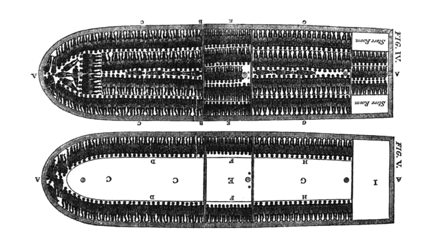

1619–1865 · CHATTEL SLAVERY
02/ 10
SLAVERY & THE RACIAL ORDER
Built to extract labor from Black bodies — and deny their humanity.
Enslaved people were deemed property, not persons: a fabricated rationale that kept the economic engine running. Counterpoint: only a tiny share of Africans in the Atlantic trade landed in North America.
12.5M
forced into the Atlantic trade · ~10.7M disembarked alive in the Americas


ASKIf most enslaved Africans went elsewhere, why focus on the U.S.?
SRC · SlaveVoyages · PBS, “How Many Slaves Landed in the U.S.?”